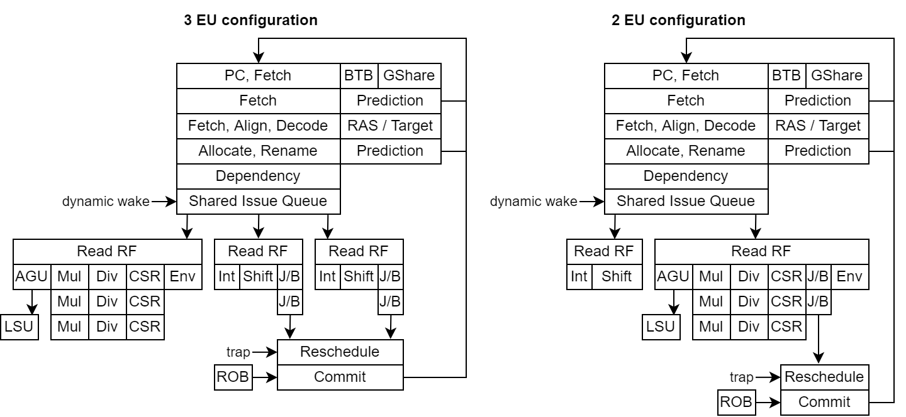

Performance and Area¶
RV32¶
A few things to keep in mind :
You can trade FMax IPC Area
There is better IPC xor FMAX xor Area configs
For the following configuration :
RV32IMASU, dual issue, OoO, linux compatible
64 bits fetch, 2 decode, 3 issue, 2 retire
Shared issue queue with 32 entries
Renaming with 64 physical registers
3 execution units (2*Int/Shift/branch, 1*load/store/mul/div/csr/env)
LSU with 16 load queue, 16 store queue
Load hit predictor (3 cycles load to use delay)
Store to load bypass
I$ 16KB/4W, D$ 16KB/4W 2 refill 2 writeback slots
MMU with ITLB 6 way/192 entries, DTLB 6 way/192 entries
BTB 1 way/512 entries, GSHARE 1 way/4KB, RAS 32 entries
Performance :
Dhrystone : 2.93 DMIPS/Mhz 1.65 IPC (-O3 -fno-common -fno-inline, 318 instruction per iteration)
Coremark : 5.02 Coremark/Mhz 1.28 IPC (-O3 and so many more random flags)
Embench-iot : 1.67 baseline 1.42 IPC (-O2 -mcmodel=medany -ffunction-sections)
On Artix 7 speed grade 3 :
13.3 KLUT, 10.3 KFF, 12 BRAM, 4 DSP
155 Mhz
Reducing the number of int ALU to a single one and moving the branch to the shared pipeline will produce :
Performance :
Dhrystone : 2.71 DMIPS/Mhz (-O3 -fno-common -fno-inline)
Coremark : 4.44 Coremark/Mhz (-O3 and so many more random flags)
Embench-iot : 1.46 baseline (-O2 -mcmodel=medany -ffunction-sections)
On Artix 7 speed grade 3 :
12.1 KLUT, 9.9 KFF, 12 BRAM, 4 DSP
148 Mhz
To go further, increasing the GSHARE storage or implementing something as TAGE should help.
Here are a pipeline representation of the two above configurations :
Also note that the NaxRiscv simulator support gem5 / konata logs, allowing to visualise the execution flow.
Note that if you configure the core with 1 decode 1 alu 1 shared eu you get :
Performance :
Dhrystone : 1.70 DMIPS/Mhz (-O3 -fno-common -fno-inline)
Coremark : 3.35 Coremark/Mhz (-O3 and so many more random flags)
Embench-iot : 1.06 baseline (-O2 -mcmodel=medany -ffunction-sections)
On Artix 7 speed grade 3 :
10.8 KLUT, 9.7 KFF, 12 BRAM, 4 DSP
155 Mhz
RV64¶
In a similar configuration as the above RV32 (2*Int/Shift/Branch, 1*/load/store/mul/div/csr/env)
Performance :
Dhrystone : 2.94 DMIPS/Mhz (-O3 -fno-common -fno-inline)
Coremark : 4.94 Coremark/Mhz (-O3, u32 as s32 and so many more random flags)
Embench-iot : 1.84 baseline (-O2 -ffunction-sections)
On Artix 7 speed grade 3 :
17.9 KLUT, 12.5 KFF, 12 BRAM, 16 DSP
137 Mhz
Notes¶
Here are a few notes collected during the development :
An out of order CPU without branch prediction is performing really bad ^^
Avoiding store having to wait for the store data in the IQ can really help avoiding bad load speculation.
Some tests were made with two cycle latency ALU (in prevision of RV64 timing relaxation) which seem to show “little” impact on the overall performances (~15%, need to verify on more benchmarks)
Adding more and more execution units seems to go fast into diminishing returns lands
How to run the benchmark¶
First follow the steps in https://github.com/SpinalHDL/NaxRiscv/blob/main/src/test/cpp/naxriscv/README.md#how-to-setup-things to get a functional simulator.
Then dhrystone and coremark benchmark can be run manually with :
obj_dir/VNaxRiscv --name dhrystone --output-dir output/nax/dhrystone --load-elf ../../../../ext/NaxSoftware/baremetal/dhrystone/build/rv32im/dhrystone.elf --start-symbol _start --stats-print --stats-toggle-symbol sim_time
obj_dir/VNaxRiscv --name coremark --output-dir output/nax/coremark --load-elf ../../../../ext/NaxSoftware/baremetal/coremark/build/rv32im/coremark.elf --start-symbol _start --pass-symbol pass --stats-print-all --stats-toggle-symbol sim_time
To run embench, you have to clone https://github.com/SpinalHDL/embench-iot.git and then follow the steps defined in config/riscv32/boards/naxriscv_sim/README.md